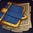

First of all...
I agree with these themes:
• 21+
• Walk ups are encouraged
• LGBTQIA+
• Consensual adult content - Don't be clueless
I'm still writing my story...
I keep traveling and adventuring around the world, making friends and having a good laugh.
In addition to being a fearless adventurer in heavy armor, I was raised and trained to become a paladin of light and fight against evil. Since I was very young, I received the proper guidance to follow the path of light and I never questioned past teachings. I proudly say that I underwent rigorous training which shaped my body and soul for the righteousness of light.
I have already carried out some adventures together with my fellow paladins and alone, always seeking justice and equality for all. We fought evil across Azeroth, seeking justice for those in need and soothing their hearts that lighted. However, over the years I realized that life is much more than servitude. Not that the purpose is not noble or that the cause is not valid, my point is: I can also help people by not only taking care of their bodies but also feeding their souls.
At this moment, I find myself away from paladin activities due to mental and physical fatigue, I started to pursue other hobbies and recently started a small newspaper project called: Seagull's Gazette!
Right now I'm interviewing people and looking for interesting news to publish. I've been adventuring in taverns, varied events and fearlessly, I've been exploring the amazing world of Azretoh. I feel that I have created a commitment to taking information and true stories across the seas.
I finally feel free!
First impression - TRP
When you look at me you can see that:
-
 Strong independent baby girl: I may be sweet but I still wear heavy armor sometimes. I have the heart and body of an adventurer.
Strong independent baby girl: I may be sweet but I still wear heavy armor sometimes. I have the heart and body of an adventurer.
-
 Charming: An inviting smile... come closer!
Charming: An inviting smile... come closer!
-  Novice Reporter: Owner of the small newspaper Seagulls Gazette. Telling stories that need to be heard!
- The party has arrived: There's only two types of people in the world: The ones that entertain and the ones that observe! Well, baby, I'm a put-on-a-show kind of girl
-
 You know how it is...: A girl needs to pay her bills and support her expensive tastes!
You know how it is...: A girl needs to pay her bills and support her expensive tastes!
üíï Please, be gentle, im new on RP!
üìù English is not my native language, please be patient!